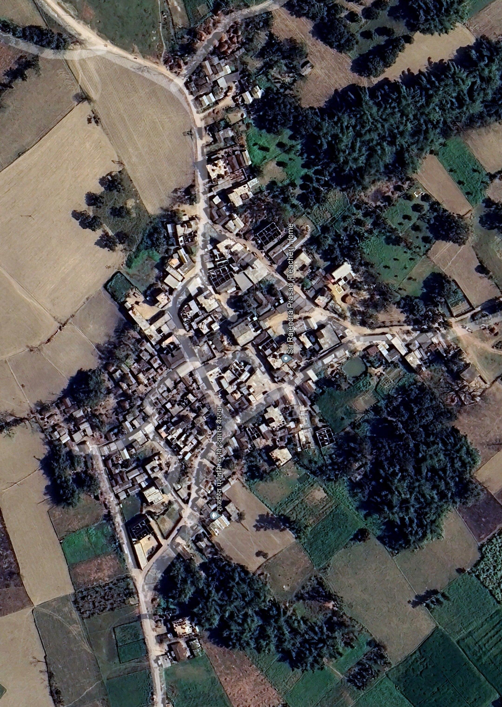

About Bairatwa
A typical Indian village, like Bairatwa, is often surrounded by lush green fields, with farming being the main source of livelihood. The air is fresh, and life moves at a slower, more peaceful pace compared to busy cities. Houses are usually simple, some made of bricks and others with mud walls and thatched roofs. People know each other well, and there is a strong sense of community where neighbors help one another in times of need. Festivals, fairs, and traditional rituals are celebrated with great enthusiasm, bringing the whole village together. Despite limited modern facilities, such villages are rich in culture, values, and the beauty of nature, offering a glimpse of India’s heart and soul.
